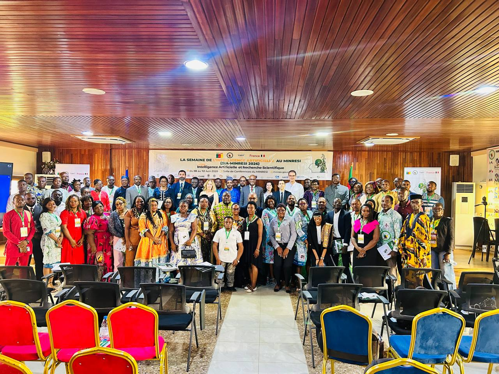

Instituts et Partenaires



Le CNDT
Une organisation structurée autour du Secrétariat Permanent, de trois coordinations exécutives adjointes et de cinq Secrétariats techniques.
Organisation institutionnelle
Le Comité comprend un organe délibérant et un organe opérationnel chargé de la mise en œuvre de ses missions.
Créé par le décret présidentiel n° 78/109 du 1er avril 1978, modifié et complété par le décret n° 82/126 du 18 mars 1982, le CNDT est un organisme de coordination, de réflexion et d’information en matière de transfert et de développement des technologies.